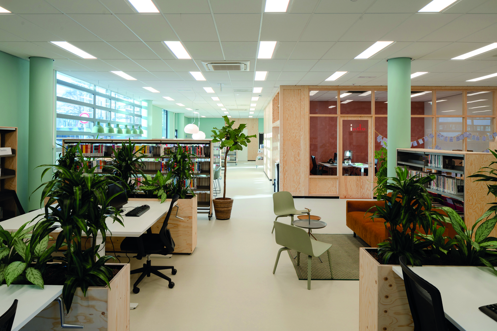

Laatste Nieuws
Nieuwe look Buurtcampus
OostWoningcorporaties, zorg en welzijnsorganisaties hebben de handen ineengeslagen om het project Lang Leven Thuisflats en buurten te realiseren. Samen met bewoners(organisaties) worden bestaande seniorencomplexen ontwikkeld tot collectieve woonvormen, waar ouderen langer zelfstandig kunnen blijven wonen. Onder de paraplu van Werkplaats Sociaal Domein Ouderen voert de HvA samen met het..
Lees meer →Nieuwe look buurtcampus
ZuidOostWoningcorporaties, zorg en welzijnsorganisaties hebben de handen ineengeslagen om het project Lang Leven Thuisflats en buurten te realiseren. Samen met bewoners(organisaties) worden bestaande seniorencomplexen ontwikkeld tot collectieve woonvormen, waar ouderen langer zelfstandig kunnen blijven wonen. Onder de paraplu van Werkplaats Sociaal Domein Ouderen voert de HvA samen met het..
Lees meer →Nieuwe look buurtcampus
Woningcorporaties, zorg en welzijnsorganisaties hebben de handen ineengeslagen om het project Lang Leven Thuisflats en buurten te realiseren. Samen met bewoners(organisaties) worden bestaande seniorencomplexen ontwikkeld tot collectieve woonvormen, waar ouderen langer zelfstandig kunnen blijven wonen. Onder de paraplu van Werkplaats Sociaal Domein Ouderen voert de HvA samen met het..
Lees meer →